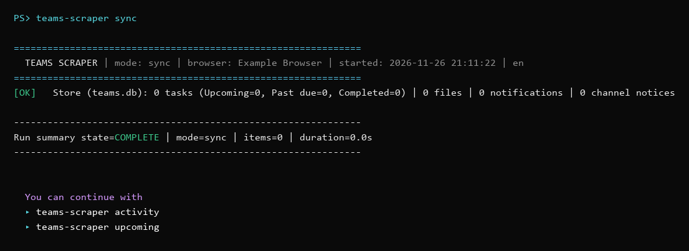

sync
It does not open the browser. The alias is sincronizar-bd.
teams-scraper sync
Every run, including this one, calls sync_catalog() first. If catalogo/ is in the data folder, those pieces are copied into the database.
Then, if the store has notices, it rewrites activity.json from them. It prints the counts and finishes COMPLETE. It does not rebuild upcoming.json, past_due.json, or completed.json. Those copies are written by a full read of each list.